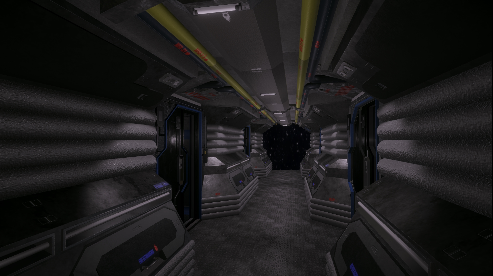
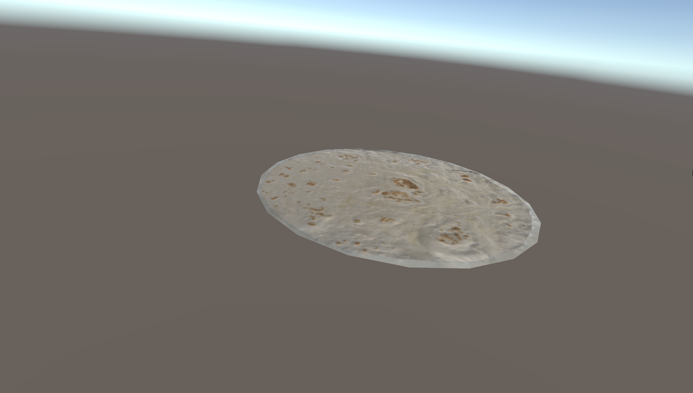
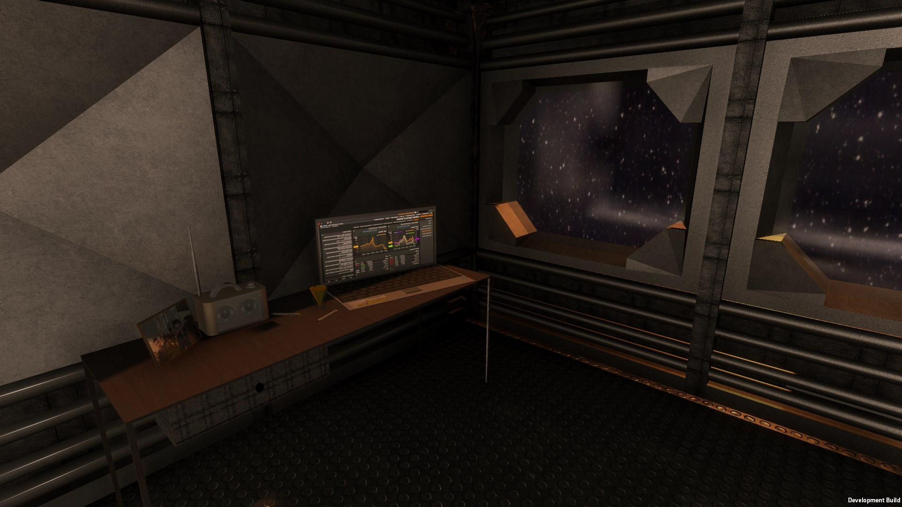
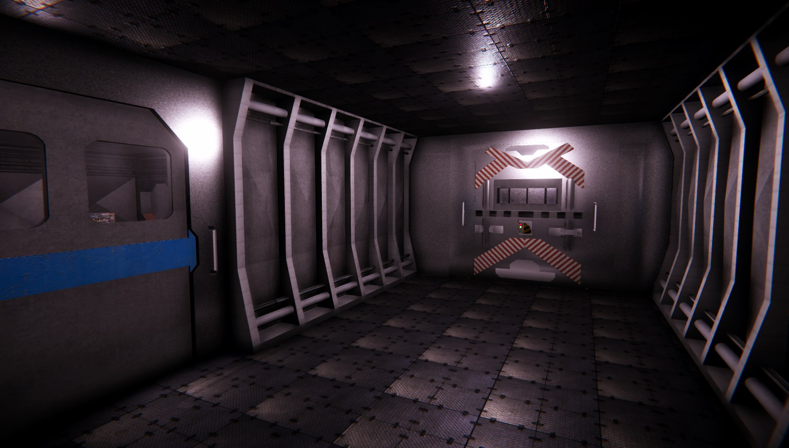

What is The Seikan Project?
The Seikan Project is a psychological horror game made in the Unity engine. You play as Gary Croft, a maintenance worker on the Seikan 4 research space station orbiting between Venus and Mercury around the sun that studies the effects of a strange type of radiation discovered in space.
You're quickly notified of an imminent asteroid impact but without enough fuel to return to Earth you make your way to Seikan 5 instead to seek help from the other researchers onboard the station, however, once you arrive, everything isn't as it seems.
Follow Gary as he blurs the line between what's reality and fiction.
The Team
Jonathan Poynter
Project Lead & Programmer
I know C# just as much as I know VB, not very.
Lewis Hiscock
Asset/Interior Designer & Sound Director
"Can we play CS?"
Tyler Marc
Graphics/Web Designer & Writing
All web, no code.
Andy Lupu
Bitcoin Invester and Real Estate Agent
I've done everything, but nothing.
Dev Blog
Corridor and Bedroom rework
06/05/2018
Over the past few weeks everything has been remodeled to better fit our vision of the game and more importantly perform better now that models are saved in a new format.
Changelog
New Content:
- New corridor model
- New layout of Floor
Bug Fixes:
- Huge Performence boost
Build v0.2.8
25/04/2018
We made significant progress on the game! However, in the process we took a look at the project as a whole and reworked many aspects of the original game, some people may think it's a completely different game. Happy playing!
Changelog
New Content:
- Tortilla
Build v0.2.6
23/04/2018
Quite a few changes since the last build. A new elevator door and a bunch of other models have been added as well as changes to post processing and lighing. We have a bunch of stuff in the works right now that should be in the game soon.
Changelog
New Content:
- New elevator door and animations
- Dome Light Model
- Bar Light Model
- Kitchen Room Added
- temporary elevator door added
- Wake Up Animations
- temporary alarm
- Added temp toolbox
- Added todo List
- Added elevator animations and sounds
Changes/Adjustments to existing things:
- Changed Ceiling Lights from 'Point Light' to 'spotlight'
- Airlock door collider made closer
- Changed Post Processing
- Floor Texture Change
- Replaced Radio Model
Bug Fixes:
- Light Reflections buff
- Fixed Airlockdoor clipping
- Fixed Collider on windows in the start room
- Fixed Movement speed
Build v0.2.1
20/04/2018
Nothing big in this build, just a few bug fixed and slight adjustments to existing sounds. You can find the exact changes below.
As for future content & updates, we have a few more things in the works, including a desk lamp! Revolutionary!
Changelog
- Added Pictureframe
- Door Sound Volume fix
- Locker Clipping fix
- Skybox lighting fix
- Window Clipping fix
- Fixed Movement
Releasing Soon™
{kind=link}
{kind=link}
{kind=link}
{kind=link}